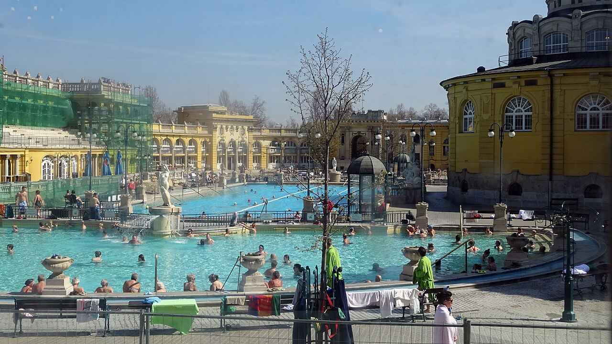
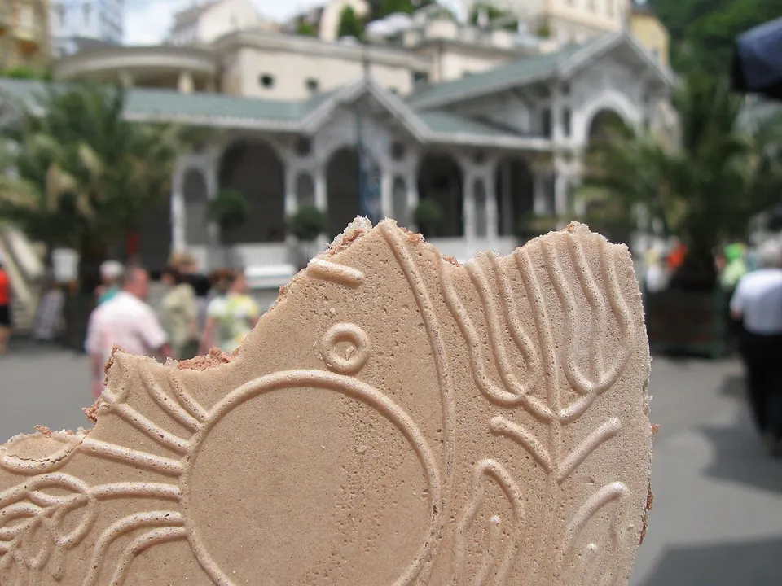
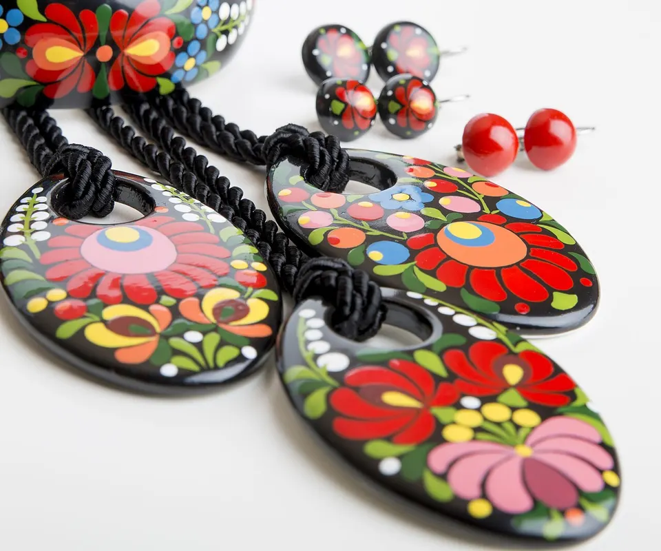
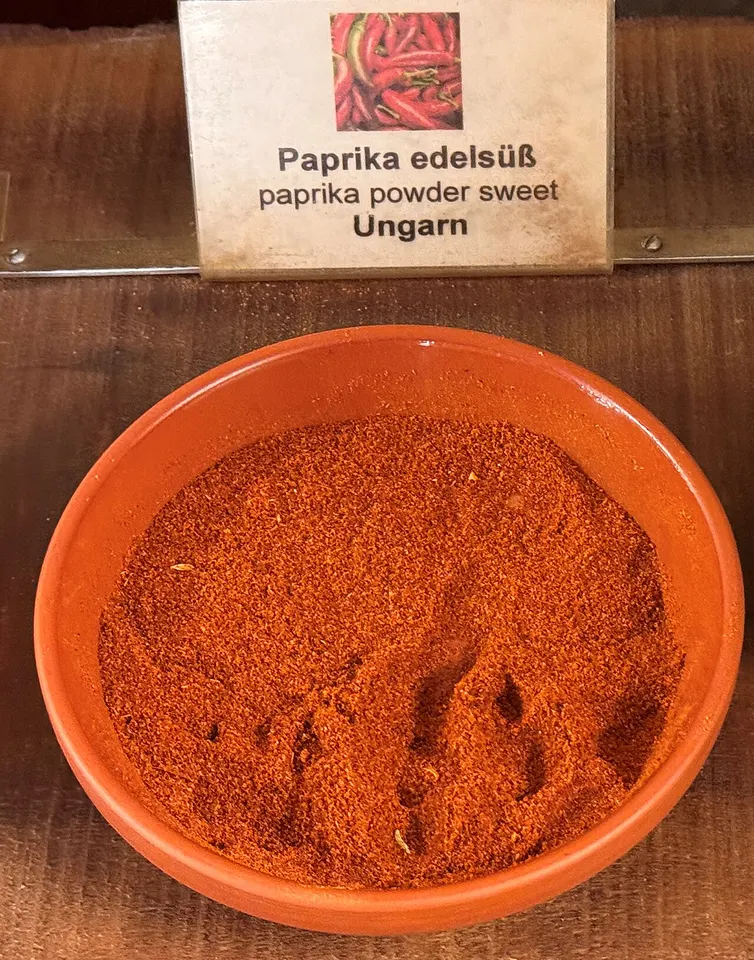
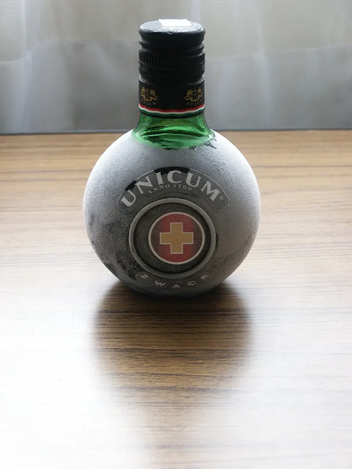
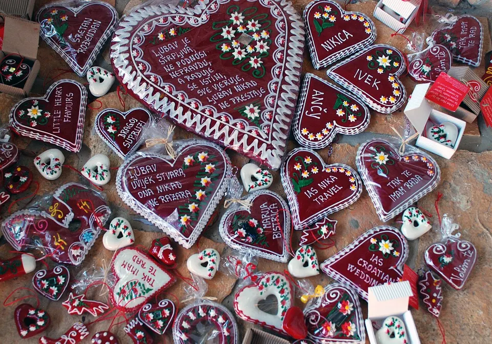
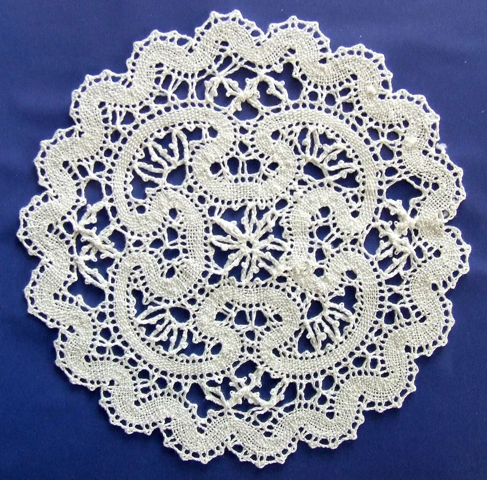

프라하 체스키크룸로프
확인- 수단
- 버스 · RegioJet·FlixBus 직행 버스
- 소요
- 약 3시간
- 환승
- 직행
기차는 체스케부데요비체에서 갈아탑니다.
중부유럽 · 아드리아해
Prague – Vienna – Budapest – Zagreb – Ljubljana – Bled
중부유럽 3대 도시에 크로아티아·슬로베니아 북부를 이어 붙인 10박 안팎 일주.



프라하로 들어가 체스키크룸로프, 비엔나, 부다페스트를 본 뒤 기차로 자그레브와 류블랴나로 넘어가고 블레드 호수에서 마무리합니다. 해외 19일 일정을 10박으로 줄인 구성입니다.


지도: © OpenStreetMap 기여자
현지 11박 12일 · 프라하 2박 → 체스키크룸로프 1박 → 비엔나 2박 → 부다페스트 2박 → 자그레브 2박 → 류블랴나 1박 → 블레드 1박
도착 인천 → 프라하 공항. 도착일은 숙소 주변 위주로 가볍게.
구시가 광장·천문시계 → 틴 성당 → 카를교 → 캄파섬. 해 질 무렵 블타바 강변에서 프라하성 야경.
천문시계는 매 정각에 움직입니다. 광장·카를교는 소매치기에 주의하세요.
숙박: 프라하
프라하성(성 비투스 대성당·황금소로) → 로레타 → 스트라호프 수도원 전망 → 말라스트라나 골목 → 페트린 언덕.
성은 오전 9시 개장 직후가 한산합니다.
숙박: 프라하
이동 프라하 → 체스키크룸로프 · 버스 약 3시간 확인
체스키크룸로프성 탑 전망 → 망토 다리 → 스보르노스티 광장 → 블타바강 굽이길 산책.
당일 관광객이 빠지는 저녁과 이른 아침이 가장 조용합니다.
숙박: 체스키크룸로프
이동 체스키크룸로프 → 비엔나 · 셔틀 약 3시간 30분 확인 필요
슈테판 대성당 → 그라벤 → 호프부르크 왕궁 → 국립오페라극장 → 카페 하우스에서 자허토르테.
오페라 입석표는 공연 당일 저렴하게 구할 수 있습니다.
숙박: 비엔나
쇤브룬 궁전·정원(오전) → 벨베데레 궁전(클림트 〈키스〉) → 나슈마르크트 시장.
숙박: 비엔나
이동 비엔나 → 부다페스트 · 기차 약 2시간 40분 일반
어부의 요새 → 마차시 성당 → 부다 왕궁 → 세체니 다리 → 도나우 강변에서 국회의사당 야경.
야경은 유람선이나 겔레르트 언덕에서도 좋습니다.
숙박: 부다페스트
국회의사당(내부 투어 예약) → 성 이슈트반 대성당 → 안드라시 거리 → 영웅 광장 → 세체니 온천.
온천은 수영복·슬리퍼를 챙기면 대여비를 아낍니다.
숙박: 부다페스트
이동 부다페스트 → 자그레브 · 기차 약 6시간 확인
반 옐라치치 광장 → 돌라츠 시장 → 자그레브 대성당 → 성 마르코 성당 → 로트르슈차크 탑 → 실연 박물관.
12월 "어드벤트 자그레브"는 유럽 최고 크리스마스 마켓으로 여러 번 뽑혔습니다.
숙박: 자그레브
레누치 말굽 공원 → 미마라 박물관 → 트칼치체바 카페 거리 → 미로고이 묘지.
숙박: 자그레브
이동 자그레브 → 류블랴나 · 기차 약 2시간 20분 일반
프레셰렌 광장 → 삼중교 → 플레치니크 시장 → 용의 다리 → 류블랴나 성(푸니쿨라) → 류블랴니차 강변 카페.
금요일(봄~가을)에는 "오픈 키친" 음식 장터가 열립니다.
숙박: 류블랴나
이동 류블랴나 → 블레드 · 버스 약 1시간 20분 일반
호수 둘레길(약 6km, 1시간 30분) → 플레트나 배로 블레드섬 → 절벽 위 블레드 성 → 크렘슈니타(크림 케이크).
오이스트리차·말라 오소이니차 전망대는 일출·일몰 사진 명소입니다.
숙박: 블레드
이동 블레드 → 류블랴나 · 버스 약 1시간 20분 일반
블레드에서 류블랴나(으)로 이동해 출국합니다. 이동 시간에 공항 수속 2~3시간을 더해 항공편을 고르세요. 귀국편은 대부분 다음 날 한국에 도착합니다.
기차는 체스케부데요비체에서 갈아탑니다.
기차는 2회 환승으로 5시간 안팎입니다. 셔틀은 업체·시간을 미리 확인해 예약하세요.
1~2시간 간격.
5시간 30분~6시간 30분. 일찍 사면 15유로 안팎부터.
하루 4~6회. FlixBus도 2시간 20분 안팎.
약 1시간 간격. 기차역(레스체-블레드)은 호수에서 4km 떨어져 있습니다.
약 1시간 간격. 기차역(레스체-블레드)은 호수에서 4km 떨어져 있습니다.
마지막 숙박지에서 출국 공항 도시까지의 이동입니다.
국경 모두 솅겐 지역입니다.
이스탄불·프랑크푸르트·뮌헨 등에서 1회 경유. 편수가 적어 자그레브·비엔나·베네치아 공항 + 육로 이동과 비교해 보세요.
5·9월
1~2월
6~8월은 덥고 붐빕니다.
지나가는 나라마다 머무는 기간에 맞춰 골랐고, 비슷한 상품(와인끼리, 꿀끼리 등)은 하나만 넣어 10개 이내로 추렸습니다. 기간 탭을 바꾸면 도시에 맞게 다시 고릅니다.







카드를 누르면 나라별 쇼핑·기념품 페이지에서 구매처·반입 유의사항·사진 출처를 볼 수 있습니다. 사진은 Wikimedia Commons 자유 라이선스 사진입니다.


중기·장기(7~8박) · 3개국 · 추천 5·9·12월
첫 동유럽 여행의 정석. 직항으로 들어가 직항으로 나오고, 세 도시를 레일젯 직행으로 잇습니다.


중기(5~6박) · 2개국 · 추천 5·9·10월
프라하에 동화 같은 중세 마을 하나를 더해 비엔나로 빠져나가는 일주일 코스.


중기·장기(7~9박) · 3개국 · 추천 4·5·9월
비엔나를 건너뛰고 체코·슬로바키아·헝가리 세 나라를 한 철도 노선으로 잇는 실속 코스.


중기(5~6박) · 3개국 · 추천 4·10·12월
도나우강을 따라 세 수도를 잇는 5~7박 단기 코스. 12월 크리스마스 마켓 여행으로 특히 인기.
정보 확인일 2026-11-21